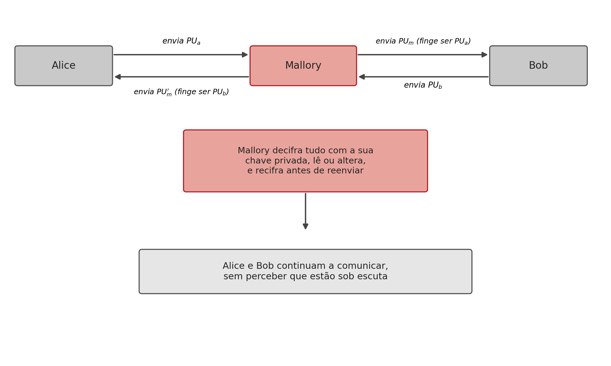
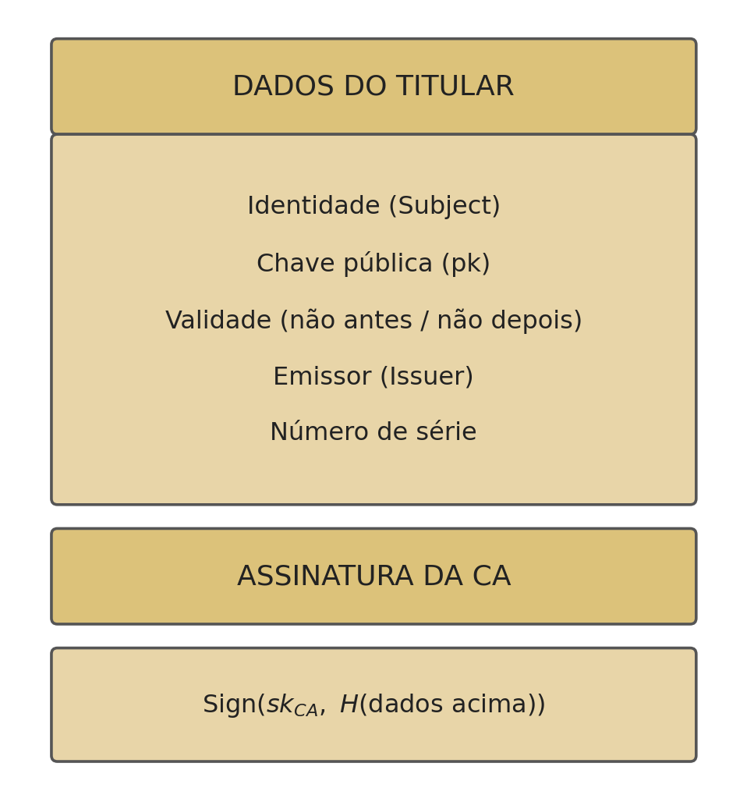
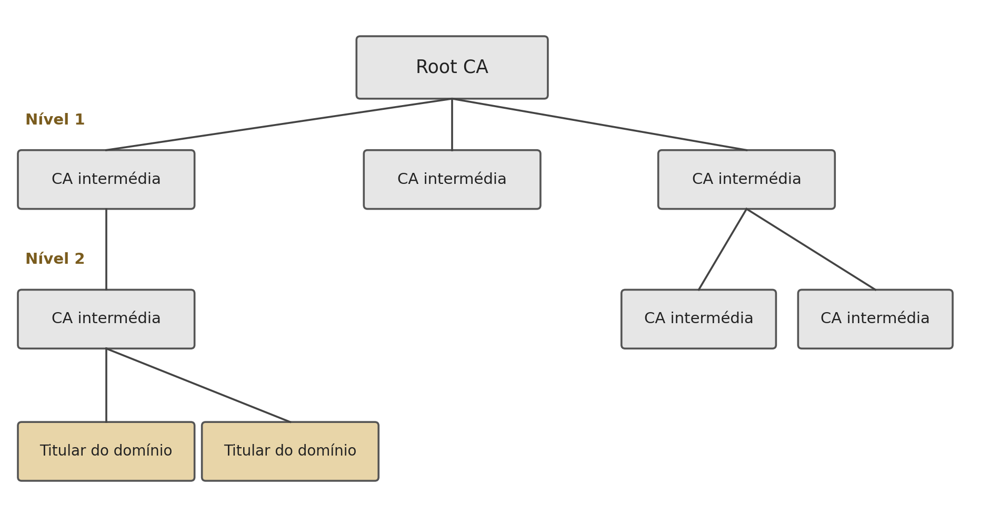

9 Infraestrutura de Chave Pública (PKI)
Introdução
O capítulo anterior terminou com uma pergunta em aberto: como sabe alguém que uma chave pública pertence mesmo a quem diz pertencer? Sem resposta a esta pergunta, todo o edifício da criptografia assimétrica, confidencialidade, autenticação, assinaturas, Diffie-Hellman, fica exposto a um único tipo de ataque. Este capítulo examina esse ataque em detalhe, e a solução de engenharia que se tornou o padrão da indústria para o resolver: a infraestrutura de chave pública.
9.1 O Ataque do Intermediário em Detalhe
No ataque do intermediário (man-in-the-middle, MITM), um atacante posicionado em qualquer ponto da rede entre as duas partes, por exemplo num router comprometido, intercepta e substitui as chaves públicas trocadas, sem que nenhuma das vítimas se aperceba (Stallings 2020):

O ataque funciona porque uma chave pública, por definição, não tem nada que a ligue de forma inseparável ao seu dono: é apenas um número, e um número não tem identidade própria. Quando Alice recebe algo que parece ser a chave pública de Bob, não tem, por si só, nenhuma forma de confirmar essa origem.
Vale a pena notar que este ataque quebra qualquer algoritmo de chave pública, não é uma fraqueza do RSA, do Diffie-Hellman ou do DSA em particular. No caso específico do Diffie-Hellman (Secção 7.3), o ataque tem uma consequência particularmente insidiosa: Mallory estabelece duas trocas de chave distintas, uma com Alice e outra com Bob, e passa a decifrar e recifrar cada mensagem trocada entre eles, sem que nenhum dos dois consiga sequer detectar que a chave “comum” que pensam partilhar não é, de facto, partilhada com o outro, mas sim com Mallory de ambos os lados.
9.2 A Solução: uma Entidade de Confiança
A solução passa por introduzir uma terceira parte, uma entidade de confiança, que ambas as partes reconheçam antecipadamente, e que testemunhe a ligação entre uma identidade e uma chave pública. Se Alice e Bob confiarem na mesma entidade, cada um pode perguntar-lhe, “esta chave pública pertence mesmo à outra parte?”, sem que essa pergunta precise de passar pelo canal, potencialmente comprometido, entre os dois (Stallings 2020; Martin 2017).
Esta é exactamente a função de uma infraestrutura de chave pública (Public Key Infrastructure, PKI): um conjunto de entidades, processos e normas que ligam formalmente identidades a chaves públicas, através de certificados digitais. Ao contrário de uma verificação pontual, o certificado é um objecto assinado, verificável de forma independente e reutilizável por qualquer parte que confie na entidade que o emitiu.
9.3 O Certificado X.509
A norma X.509, hoje universal na Web, define a estrutura de um certificado de chave pública. Um certificado X.509 contém, no essencial, os dados de identificação do titular e a assinatura de quem os certifica (Cooper et al. 2008):

- Identidade (Subject): a quem pertence o certificado, tipicamente um domínio, uma organização, ou uma pessoa.
- Chave pública: a chave que o certificado atesta pertencer a essa identidade.
- Validade: um intervalo de datas fora do qual o certificado deixa de ser considerado válido.
- Emissor (Issuer): a identidade da entidade certificadora que o assinou.
- Número de série: um identificador único do certificado, essencial para o processo de revogação.
- Assinatura da CA: a entidade certificadora (Certificate Authority, CA) assina, com a sua própria chave privada, o hash de todos os campos anteriores: \(\mathrm{Sign}(sk_{CA}, H(\text{dados do titular}))\).
Esta última linha é o que transforma os dados de identificação numa afirmação verificável: qualquer pessoa com a chave pública da CA consegue confirmar que foi mesmo aquela CA, e não outra entidade, a atestar a ligação entre aquela identidade e aquela chave pública.
9.4 A Cadeia de Certificação
Um único par de chaves de CA a certificar directamente cada site da Internet seria impraticável e frágil (um único ponto de compromisso comprometeria tudo). Em vez disso, a confiança organiza-se numa cadeia de certificação: cada certificado é assinado por outro, até chegar a uma CA raiz (Root CA), cuja chave pública vem pré-instalada no sistema operativo ou no navegador (Stallings 2020):

Confiar apenas na CA raiz, um número relativamente pequeno de entidades, cuidadosamente auditadas, é suficiente para validar qualquer certificado emitido em qualquer ponto da cadeia, por mais intermediários que existam entre a raiz e o titular final.
9.5 Como Funciona a Verificação
Quando Bob recebe o certificado de Alice, verifica-o seguindo estes passos (Stallings 2020):
- Lê o campo Emissor do certificado, identificando qual CA o assinou.
- Obtém a chave pública dessa CA, \(pk_{CA}\) (a partir do certificado da própria CA, já conhecido e confiado, ou seguindo a cadeia até uma raiz que o seja).
- Verifica a assinatura: \(\mathrm{Verify}(pk_{CA}, \text{dados do certificado}, \text{assinatura}_{CA})\).
- Se a assinatura for válida, a chave pública de Alice está confirmada como genuína.
- Verifica ainda o período de validade, o estado de revogação (através de uma lista de revogação, Certificate Revocation List, ou do protocolo em tempo real Online Certificate Status Protocol, OCSP), e o uso permitido do certificado.
Só depois de todos estes passos passarem é que Bob tem uma garantia fundamentada de que a chave pública recebida é mesmo de Alice, e não de um atacante interposto.
9.6 Na Prática: Inspeccionar um Certificado
Qualquer certificado X.509 usado num servidor público pode ser inspeccionado directamente:
$ openssl s_client -showcerts -connect www.exemplo.com:443 >> cert.pem
$ openssl x509 -in cert.pem -text -nooutO primeiro comando estabelece uma ligação TLS e regista a cadeia de certificados enviada pelo servidor; o segundo lê o certificado e apresenta, em texto legível, exactamente os campos discutidos na Secção 9.3, incluindo o titular, o emissor, o período de validade e o algoritmo de assinatura usado.
9.7 Síntese do Capítulo
Este capítulo resolveu o problema deixado em aberto no capítulo anterior:
- O ataque do intermediário (MITM) quebra qualquer algoritmo de chave pública, substituindo as chaves trocadas por outras, controladas pelo atacante, sem que nenhuma das vítimas o perceba
- A solução é introduzir uma entidade de confiança partilhada, capaz de atestar formalmente a ligação entre uma identidade e uma chave pública
- Um certificado X.509 contém a identidade do titular, a sua chave pública, um período de validade, o emissor, e a assinatura desse emissor sobre um hash de todos estes dados
- A confiança organiza-se numa cadeia de certificação, da CA raiz (pré-instalada no sistema) até ao titular final, através de CAs intermédias
- Verificar um certificado exige confirmar a assinatura da CA emissora, o período de validade, e o estado de revogação, não basta confirmar só a assinatura
9.8 Para Pensar
A cadeia de certificação (Secção 9.4) resolve o problema de confiar numa chave pública introduzindo confiança numa CA raiz, pré-instalada no sistema operativo ou no navegador. Isto desloca o problema original (como confiar numa chave pública?) para um problema ligeiramente diferente. Qual é esse novo problema, e porque é que confiar numa dezena de CAs raiz pré-instaladas é uma solução mais praticável do que pedir a cada utilizador da Internet que confirme manualmente a chave pública de cada site que visita?